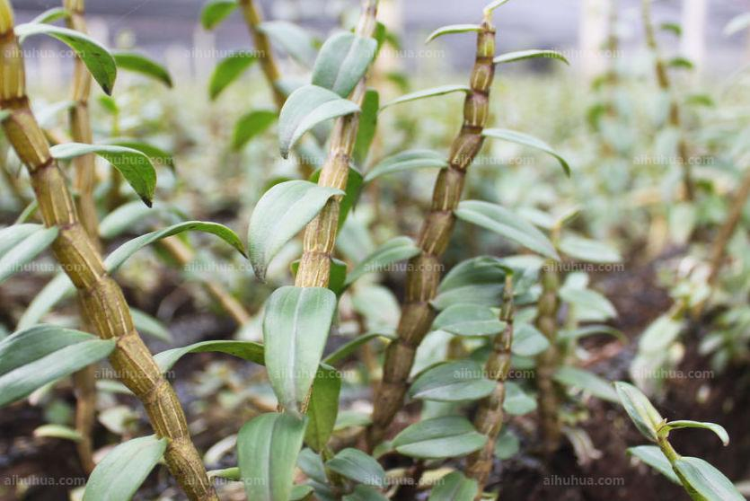

铁皮石斛

典籍
石斛，生六安山谷冰傍石上。今荆、川、广州郡及温、台州亦有之，以广南者为佳。多在山谷中。
——宋《图本草》
依《图经木草》记载，石斛，生在安徽六安地区的山谷里水边的石缝中，现在(北宋时期)的荆州(现湖北荆州、宜昌、重庆万州巫山部分、湖南常德张家界部分)、 四川、广州和温州台州都有，以广南地区的好一些:
今荆州、光州、寿州、庐州、江州、温州、台州亦有之，以广南者为佳，
——明《木草纲目.草部九》
到明朝李时珍编撰《本草纲目》，提到石斛，表述的内容相类似，石斛生在安徽六安地区的谷中水边的石缝中，现在(明朝时)荆州、淮南西路的光州(河南信阳东部大别山)、寿州(安徽六安市和霍山县)、庐州(安徽合肥、舒城县)、 浙江温州、台州也都有，以广南地区的好一些；
产地
我们的石斛